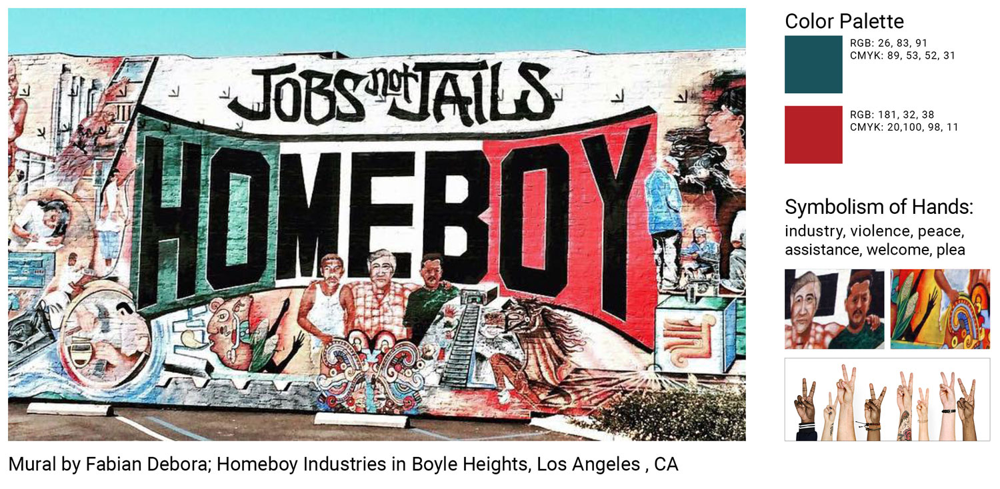
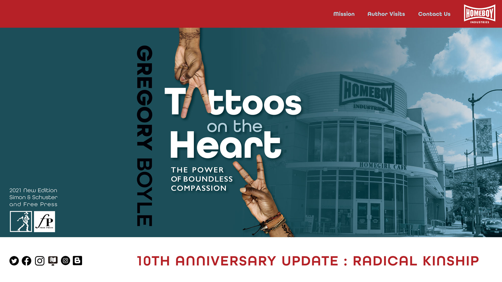

Tattoos on the Heart: The Power of Boundless Compassion
Illustrator, InDesign, Photoshop
Book Cover for New Edition
To practice Photoshop techniques in masking and shadows, I updated a book that I believe could capture a larger readership if the cover were updated. Social advocacy remains relevant, and Boyle's stories have impact for teen readers and older. In honor of an upcoming 10th anniversary reprint, I gave the cover new imagery and a color scheme that grabs attention.
Color and Image Inspiration
Tattoos on the Heart book sales support the Los Angeles non-profit Homeboy Industries, founded by author Gregory Boyle. Colors from the mural became the core color scheme for bold color blocking on the cover; I chose Latinx hands to show Boyle's message of healing through employment opportunities at Homeboy Industries.
Social Media and Web
I created a website and Instagram post to promote a 10th anniversary edition. Boyle gives author talks around the U.S. to promote his message, and the source material is as relevant today as it was 10 years ago.
